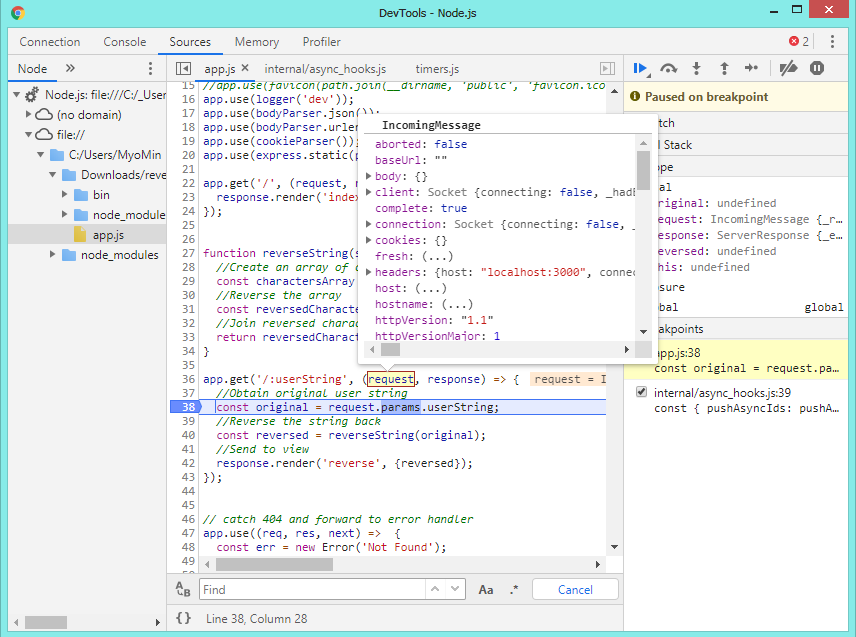
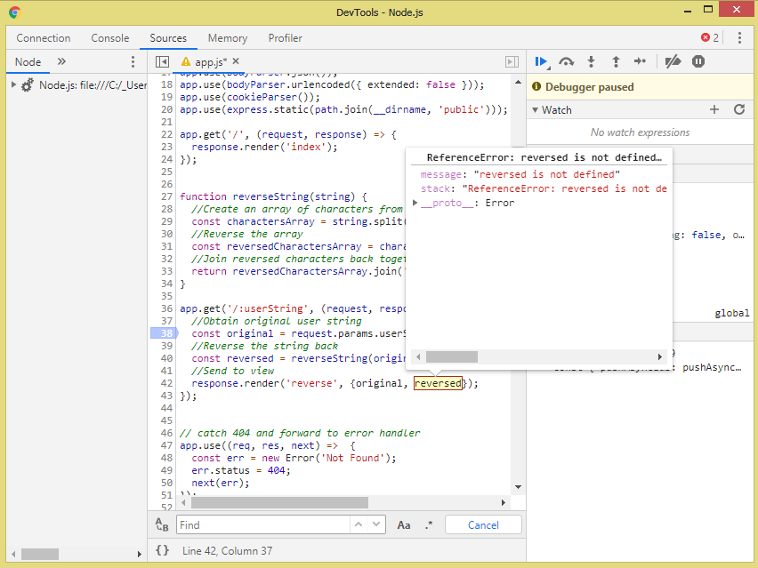

What is Debugging
ကျွန်တော်တို့ဒီတစ်ခါမှာတော့ professional tools တွေနဲ့ကျွန်တော်တို့ node.js တွေကို debug ပြုလုပ်နိုင်တဲ့ techniques တွေကိုလေ့လာသွားမှာဖြစ်ပါတယ်။Debugging process ဆိုတာကတော့ ကျွန်တော်တို့ code တွေထဲမှာရှိတဲ့ errors တွေကိုထုပ်ပြီးဖော်ပြနိုင်ပြီးတော့ ဖယ်ရှားနိုင်တာပဲဖြစ်ပါတယ်။debugging ဆိုတာဘာကိုဆိုလိုသလဲဆိုရင်တော့ console.log statements တွေရေးခြင်းကလည်းဖြစ်နိုင်ပါတယ်။web-application တွေတည်ဆောက်တဲ့အခါမှာ http request တွေအားလုံးက console ထဲမှာ logged တွေထုပ်ပေးတာပဲဖြစ်ပါတယ်။ကျွန်တော်တို့က application ကိုရပ်တန့်လိုက်တဲ့အခါမှာတောင် အခြား console.log တစ်ခုကိုရေးပြီးတော့ application ကိုပြန်ပြီးဖွင့်နိုင်ပါတယ်။အဲ့ဒီ process တွေကို clumsy နဲ့ cumbersome လို့ခေါ်ပါတယ်။ကျွန်တော်တို့က console.log statement တွေကိုရေးပြီး application တွေထဲကိုထည့်နိုင်ပြီးတော့ အဲ့တာတွေကအမှန်တကယ်တော့မလိုအပ်ပါဘူး။ကျွန်တော်တို့ program တွေရဲ့ function တွေမှာ console.log တွေမလိုအပ်ပါဘူး။နောက်ထပ်တစ်ချက်ကတော့ console.log တွေကို version control တွေရေးဖို့အတွက်အသုံးပြုခြင်းကကျွန်တော်တို့တွေကိုပဲအနှောက်အယှက်ဖြစ်စေတာမဟုတ်ပဲ ကျွန်တော်တို့ project တွေနဲ့အလုပ်လုပ်တဲ့ အခြား developer တွေကိုလည်းပဲရှုပ်ထွေးစေပါတယ်။ရေဘူယအားဖြင့်တော့ console.log တွေက problematic တွေဖြစ်နိုင်ပြီးအဲ့တာတွေကိုကျွန်တော်တို့က proper debugging tools တွေကိုအသုံးပြုပြီးတော့ကျော်လွှားနိုင်ပါတယ်။ကျွန်တော်တို့ ပတ်ဝန်းကျင်မှာ debugging tools တွေအများကြီးရှိပြီးတော့အရေးကြီးတဲ့အချက်တွေကိုအလုပ်လုပ်ဖို့ခွင့်ပြုပေးတာပဲဖြစ်ပါတယ်။ပထမ code ထဲမှာသတ်မှတ်ထားတဲ့ points အတိုင်း execution ပြုလုပ်တာကိုရပ်တန့်ပေးနိုင်ပါတယ်။အဲ့တာတွေက variables တွေရဲ့ content တွေကို inspect ပြုလုပ်ဖို့ခွင့်ပြုပေးပြီးတော့ program run နေတဲ့အချိန်မှာသူတို့ရဲ့ values တွေကို modify ပြုလုပ်နိုင်ပါတယ်။ကျွန်တော်တို့ application တစ်ခုနဲ့ဥပမာပြမှာဖြစ်လို့ gitHub site မှာသွားပြီး application zip ကို download ပြုလုပ်နိုင်ပါတယ်။နောက်ပြီး zip file ကိုဖြည်ပြီးတော့ terminal ထဲကနေ application file ထဲထိ path ပေးခဲ့ရပါမယ်။နောက်ထပ်တစ်ဆင့်ကတော့ npm install ဆိုပြီး npm ကို install ပြုလုပ်ပေးရမှာပဲဖြစ်ပါတယ်။အဲ့ဒီနောက် application ကိုစပြီး run ဖို့အတွက် npm start ဆိုပြီးပေးခဲ့ရမှာပဲဖြစ်ပါတယ်။application ကအလုပ်လုပ်နေပြီးဖြစ်တဲ့အတွက် browser ထဲကနေ localhost:3000 ဆိုပြီးရိုက်ကြည့်ရင် application အလုပ်လုပ်တာကိုတွေ့ရမှာဖြစ်ပါတယ်။အဲ့ဒီ list တွေထည့်ထားပြီးတော့ list တွေမှာပေးထားတဲ့ strings တွေက missing ဖြစ်နေမှာပဲဖြစ်ပါတယ်။ ကျွန်တော်တို့ဥပမာထဲမှာဖော်ပြပေးထားတာကတော့ npm install တင်နည်းနဲ့ start ပြုလုပ်တဲ့နည်းတွေပဲဖြစ်ပါတယ်။
Setting Up Google Chrome for Node.js Debugging
Node application တွေကို debugging ပြုလုပ်ဖို့အတွက် google Chrome features တွေကို node.js 6.3+ မှာပထမဆုံးမိတ်ဆက်ခဲ့ပါတယ်။ဒါပေမယ့် Node.js 6.4+ မှာထောက်ခံမှုတွေပေးမထားပါဘူး။ကျွန်တော်တို့မှာ အနည်းဆုံး google Chrome 55+ တော့လိုအပ်ပါလိမ့်မယ်။Google Chrome ကိုအသုံးပြုတဲ့အခါမှာကောင်းမွန်တဲ့ အချက်တစ်ချက်ကတော့ debugging tool ကတူညီတဲ့ interface တစ်ခုပေါ်မှာ front end javaScript နဲ့ Backend javaScript နှစ်ခုလုံးကို debug ပြုလုပ်နိုင်တာပဲဖြစ်ပါတယ်။goolge chrome မှာဘယ်လိုအလုပ်လုပ်လဲဆိုတာကိုသိဖို့အတွက်experimental dev tool ကိုသွားဖို့အတွက်setting panel တစ်ခုဖြစ်တဲ့ chrome//flags ကိုသွားပြီးဖွင့်ရပါမယ်။အဲ့ဒီနောက် dev tool ကိုဖွင့်ပြီး developer tool ရဲ့ setting ထဲကိုသွားပြီး experiments ဆိုတဲ့ tag ကိုသွားပေးရမှာပဲဖြစ်ပါတယ်။နောက်ထပ်တစ်ဆင့်ကတော့ shift key ကို 6 ခါနှိပ်ပေးရမှာပဲဖြစ်ပါတယ်။အဲ့ဒီအခါမှာအခြား option တွေကိုလည်းုကျွန်တော်တို့မြင်တွေ့ရမှာပဲဖြစ်ပါတယ်။အဲဒီအထဲမှာ node debugging ဆိုတာပါမှာဖြစ်ပြီး select မှတ်ပေးခဲ့ရမှာလဲဖြစ်ပါတယ်။ကျွန်တော်တို့ရဲံ node ကို debug mode ထားခဲ့ပြီဖြစ်ပြီး chrome အတွက် URL ကို Generate ပြုလုပ်ပေးဖို့အတွက်ကျွန်တော်တို့ application ထဲမှာ inspect ပြုလုပ်ပေးခဲ့ရမှာဖြစ်ပါတယ်။ကျွန်တော်တို့ node app တွေ run တဲ့အခါ node --inspect app.js ဆိုပြီး run ခဲရမှာပဲဖြစ်ပါတယ်။ကျွန်တော်တို့ရဲ့ application ကိုစဖို့အတွက် NPM ကိုအသုံးပြုခဲ့တာဖြစ်တဲ့အတွက်ကြောင့် package.JSON ကို modify ပြုလုပ်ပေးဖို့လိုအပ်ပါတယ်။modify ပြုလုပ်ပြီးတဲ့အခါမှာတော့ application ကိုပြန် run ကြည့်ရမှာဖြစ်ပါတယ်။အဲ့ဒီအခါမှာ server start ပြုလုပ်တဲ့ message ကိုမြင်ရမှာဖြစ်ပြီးတော့ debuggin ပြုလုပ်တဲ့ URL ကိုလည်းတွေ့ရမှာဖြစ်ပါတယ်။ကျွန်တော်တို့ chrome://inspect ဆိုတာကိုရိုက်ထဲ့ပြီး Open dedicated DevTools for Node ဆိုတာကနေသွားပြီးတော့ node jsတွေကို run နိုင်ပါတယ်။
Debugging Variables with Google Chrome
ကျွန်တော်တို့ ဥပမာ program ကို browser ထဲမှာ run နေပြီးတော့ imposing ဖြစ်နေပါတယ်။ဘာ့ကြောင့်လဲဆိုတော့ကျွန်တော်တို့က code ထဲမှာနေရာတွေကို specified မပြုလုပ်ခဲ့လို့ပဲဖြစ်ပါတယ်။ကျွန်တော်တို့က အဲ့တာတွေကို post ပြုလုပ်ချင်တဲ့အခါမှာကျွန်တော်တို့ရဲ့ code ထဲမှာဘယ်နေရာမှာ
execution ပြုလုပ်မယ်ဆိုတာကိုသတ်မှတ်ရမှာပဲဖြစ်ပါတယ်။အဲ့တာကြောင့်ကျွန်တေ်ာတို့က node debug browser ထဲမှာ inspect ထောက်ပြီးတော့ source ကိုသွားပြီး app.js ကိုဖွင့်ပေးရမှဖြစ်ပါတယ်။အဲ့ဒီထဲမှာဆိုရင် line 36 to 43 က URL handler ဖြစ်ပြီးတော့အဲ့တာက
URL နဲ့ reverses တွေကနေ user string တွေကိုယူတာပဲဖြစ်ပါတယ်။URL handler က application execution တွေကို post ပြုလုပ်ဖို့အတွက် သင့်လျှော်တဲ့နေရာမှာမြင်တွေ့နိုင်အောင်ပြုလုပ်ပေးတာပဲဖြစ်ပါတယ်။ကျွန်တော်တို့က application ကို pause ပြုလုပ်ဖို့အတွက်
breakpoint တွေအသုံးပြုဖို့လိုအပ်ပါတယ်။breakpoint တည်ဆောက်ဖို့အတွက် ကျွန်တော်တို့ execution ပြုလုပ်ချင်တဲ့ line number ပေါ်မှာ click ပြုလုပ်ပြီး pause ပြုလုပ်နိုင်ပါတယ်။ ကျွန်တော်တု့ိဥပမာပုံထဲမှာပြထားသလိုပဲ request တွေ response တွေလက်ခံရရှိမှာပဲဖြစ်ပါတယ်။အဲ့ဒီထဲမှာ
constant variables နှစ်ခုကိလက်ခံထားပြီးတော့ reverse နဲ့ original ဆိုတာတွေပဲဖြစ်ပါတယ်။အဲ့ဒီ variables တွေကကျွန်ာတော်တို့ breakpoint လုပ်လိုက်တဲ့အခါမှာ Undefined ဖြစ်နေလဲဆိုတော့ break point က Line တွေကို evaluation မပြုလုပ်ခင် pause
ပြုလုပ်ထားလို့ပဲဖြစ်ပါတယ်။ အဲ့ဒီအတွက်ကျွန်တော်တို့ကအပေါ်က watch panel ထဲမှာ expression တွေထပ်ထည့်နိုင်ပါတယ်။watch panel ထဲမှာတော့ variable တွေကကန့်သတ်ချက်မရှိပါဘူး။နောက်ထပ် variable တွေကို interact ပြုလုပ်တဲ့နည်းလမ်းကတော့ console ထဲမှာ
run တာပဲဖြစ်ပါတယ်။

Debugging Functions with Google Chrome
ဒီတစ်ခါမှာတော့ကျွန်တော်တို့ variables တွေကို inspecting နဲ့ modifying တွေပြုလုပ်ဖို့အတွက် debugging tools တွေကိုလေ့လာသွားမှဖြစ်ပါတယ်။အဲ့တာကြောင့်ကျွန်တော်တို့က page ပေါ်မှာ inspect ထောက်ပြီး source tag ထဲမှာသွားကြည့်ရမှာပဲဖြစ်ပါတယ်။ကျွန်တေ်ာတို့က line 40 ပေါ်မှာ reverse string ပေါ်မှာ click နှိပ်ပြီးတော့ next step function ဆိုတဲ့ button ကိုနှိပ်ရမှာပဲဖြစ်ပါတယ်။အဲ့ဒီအခါမှာ reverseString function ရဲ့အတွင်းထဲကိုရေက်သွားမှာပဲဖြစ်ပါတယ်။နောက်ထပ်function တွေကိုလည်း panel ထဲမှာရှိတဲ့ button တွေကိုနှိပ်ပြီးတော့သွားနိုင်ပါတယ်။ကျွန်တေ်ာတို့ console ထဲကနေလည်းသွားပြီးသတ်မှတ်နိုင်ပြောင်းလဲနိုင်တာပဲဖြစ်ပါတယ်။
Live Editing Code with Google Chrome
ကျွန်တော်တို့က function တွေထဲမှာပြသနာကိုရှာနိုင်ပြီး debug console ထဲမှာ option တွေကိုလက်တွေ့ပြောင်းလဲပြီးရှာနိုင်ပါတယ်။အဲ့ဒီအတွက်ကျွန်တေ်ာတို့က code ကို direct ပြုပြင်ဖို့အတွက်ကျွန်တေ်တို့ရဲ့ဥပမာ app ထဲမှာရှိတဲ့ line 42 မှာ reverse variable ကိုမြင်တွေံရမှဖြစ်ပါတယ်။အဲ့တာက
local variable ထဲကို Pass ပြုလုပ်နိုင်ပြီးတော့ template ထဲမှာ access ပြုလုပ်နိုင်ပါတယ်။original variable တစ်ခုကိုထပ်ထည့်ပြီးကျွန်တာ်တို့ run ကြည့်တဲ့အခါမှာကျွန်တော်တို့ program ကကောင်းကောင်းအလုပ်လုပ်တာကိုတွေ့ရမှာပဲဖြစ်ပါတယ်။အဲ့တာကြောင့်ကျွန်တော်တို့က
program ထဲမှာအမှန်ကိုသွားပြင်နိုင်မှာပဲဖြစ်ပါတယ်။



Can Request Example project File